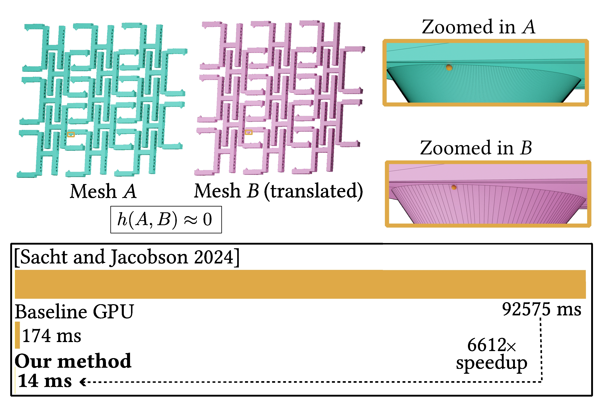

1 - Zhejiang University, China
2 - Zhejiang Sci-Tech University, China
3 - Universidade Federal de Santa Catarina, Brazil
* - Corresponding Author
Abstract
Computing the directed Hausdorff distance between two triangle meshes is a fundamental
operation in geometry processing and simulation. While existing certified branch-and-bound
(B&B) methods are efficient for well-separated geometry, they can become prohibitively
expensive on large models under tight tolerances and near-zero distance configurations where
pruning is limited. We present a GPU-accelerated certified B&B algorithm that explicitly
maintains enclosing lower and upper bounds on the directed Hausdorff distance and terminates
once their normalized gap, measured with respect to the bounding-box diagonal of the source
mesh, meets a user-prescribed tolerance. To map the inherently prioritized search to SIMT
(single-instruction multiple-thread) hardware, we replace priority queues and recursion with
a sorted, double-buffered wavefront pipeline built from bulk-parallel worklists for bound
evaluation, culling, subdivision, and compaction. To mitigate loose bounds on thin primitives
while preserving predictable stream behavior, we introduce a fixed-cardinality adaptive
subdivision scheme that selectively applies double longest-edge bisection. To remain robust
in deep-refinement regimes, we add a resource-aware deferral mechanism that enforces a
device-capacity invariant by prioritizing candidates likely to be culled while postponing
expensive ones. Finally, we improve numerical robustness under FP32 (single precision) via
triangle-local coordinate transforms and other conservative numerical safeguards, and enhance
coherence by spatially ordering the active set and traversing the BVH (bounding volume
hierarchy) in triangle packets. Under the same stopping tolerance, experiments on an NVIDIA
RTX 5090 show that our GPU solver remains numerically consistent with the FP64 CPU baseline,
with normalized cross-platform deviation below 0.01% in over 99.9% of cases. Our method achieves
millisecond-scale runtimes capable of supporting interactive frame rates, even on models with
millions of triangles. Across the comparison set, it delivers throughput speedups of 836×
on the Thingi10K/TetWild benchmark (A → B) and 709× on the
Thingi10K/Decimation benchmark.

Benchmark: Calculating the Hausdorff distance between similar objects is challenging. Zoomed-in views show the point on A that maximizes the distance to B and its closest point on B: the distance between these points is smaller than 0.0004% of the bounding-box diagonal. The state-of-the-art cascading-upper-bounds CPU baseline takes 92,575 ms to reach the target tolerance; a Baseline GPU implementation (our direct parallel port of the cascading-upper-bounds pipeline) takes 174 ms; and our method takes 14 ms under the same settings.
PDF (18.4MB) Video (10.5MB) Source Code: https://github.com/fhp-transient/gpu-hausdorff
Haopeng Fan, Min Tang, Leonardo Sacht, Qiang Zou, Ruofeng Tong, and Peng Du. 2026. GPU-accelerated Certified Hausdorff Distance Between Triangle Meshes. In ACM SIGGRAPH 2026 (SIGGRAPH Conference Papers '26), Journal Paper, Los Angeles, CA, USA. ACM, New York, NY, USA, 12 pages.
@inproceedings{fan2026gpuhausdorff,
author = {Fan, Haopeng and Tang, Min and Sacht, Leonardo and Zou, Qiang and Tong, Ruofeng and Du, Peng},
title = {{GPU-accelerated} Certified {Hausdorff} Distance Between Triangle Meshes},
booktitle = {ACM SIGGRAPH 2026},
location = {Los Angeles, CA, USA},
pages = {1--12},
year = {2026},
}
Cascading Upper Bounds for Triangle Soup Pompeiu–Hausdorff Distance (Sacht and Jacobson, CGF 2024)
RT-HDIST: Ray-Tracing Core-based Hausdorff Distance Computation (Kim et al., CGF 2025)
DisTorch: A fast GPU implementation of 3D Hausdorff distance (Rony and Kervadec, MIDL 2025)
Precise Hausdorff Distance Computation between Polygonal Meshes (Bartoň et al., CAGD 2010)
Metro: Measuring Error on Simplified Surfaces (Cignoni, Rocchini, and Scopigno, CGF 1998)
Computing the Hausdorff Distance between two B-spline Curves (Chen et al., CAD 2010)
Hausdorff and Minimal Distances between Parametric Freeforms (Elber and Grandine, GMP 2008)
Computing the Hausdorff Distance between Curved Objects (Alt and Scharf, IJCGA 2008)
gDist: Efficient Distance Computation between 3D Meshes on GPU (Fan et al., SIGGRAPH Asia 2024)
Accelerating Geometric Queries using the GPU (Krishnamurthy, McMains, and Halle, SPM 2009)
Developable Approximation via Gauss Image Thinning (Binninger et al., SGP / CGF 2021)
Thingi10K: A Dataset of 10,000 3D-Printing Models (Zhou and Jacobson, 2016)
TetWild: Tetrahedral Meshing in the Wild (Hu et al., ACM TOG 2018)
This work was supported by "Pioneer" and "Leading Goose" R&D Program of Zhejiang Province under Grant No. 2025C01086.